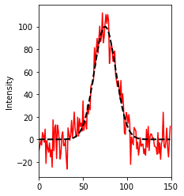
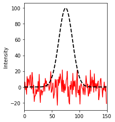
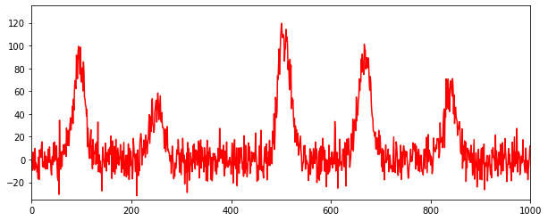
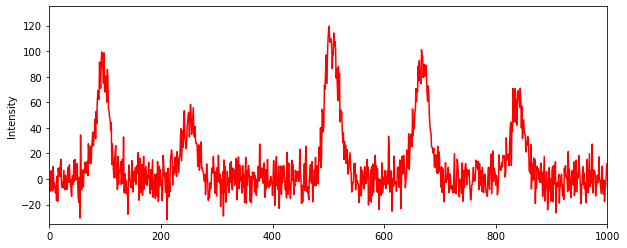

import numpy as np
import matplotlib.pyplot as plt
import scipy as sc
import scipy.special
from math import lgammaTemplate searching using BITS
template-search
The following notebook deals with identifying features, in this case, Gaussian peaks, from a noisy signal containing multiple such peaks.
Introduction
It is often not clear how one can identify features of different scales in a signal, especially when the signal is distorted by noise. Here, we show that this can be achieved very simply by comparing the local shape of a signal to the previously known ideal shape of the feature, represented here by a template. The process we outline here, where the Bayes factor for the presence of the shape determined by a localised template (evidence_shape) vs the absence of any shape (evidence_flat) is determined at each point of the data, is a simplified proof of principle example for a generalised algorithm which we call Bayesian Inference-based Template Search (BITS), as described here.
def evidence_shape(y, x): # corresponds to Eq. 2.2.1 in SI for shape calculations
N=float(x.size)
ex = np.mean(x)
exx = np.mean(x*x)
ey = np.mean(y)
eyy = np.mean(y*y)
exy = np.mean(x*y)
vx = exx - ex*ex
vy = eyy - ey*ey
vxy = exy - ex*ey
v2xy = vxy*vxy
r= vxy/np.sqrt(vx*vy)
r2 = r*r
m = (N-2.)/2.
log_l = 0
log_delm = np.log(1e20) #this is the prior term for the scale
log_l += -log_delm
log_l += -m*np.log(np.pi)
log_l += -N/2*np.log(N)
log_l += lgamma(m)
log_l += -0.5*np.log(vx)
log_l += -m*np.log(vy)
log_l += -m*np.log(1.-r2)
log_l += -np.log(2)
log_l += np.log(1.+(r/np.abs(r))*sc.special.betainc(0.5,m,r2))
return log_l
print(evidence_shape(np.random.rand(4), np.random.rand(4))) #checking it works-46.613923638849904def evidence_flat(y): # corresponds to Eq. 2.2.4 in SI for shape calculations
N=float(y.size)
ey = np.mean(y)
eyy = np.mean(y*y)
vy = eyy - ey*ey
m = (N-2.)/2.
log_l = -(m + .5)*np.log(np.pi)
log_l += -(N/2)*np.log(N)
log_l += lgamma(m +.5)
log_l += -(m + 0.5)*np.log(vy)
return log_l
print(evidence_flat(np.random.rand(10)))-4.865221143158362def make_peak(N, m, b):
x = np.arange(N)
y = m*np.exp(-((x - N/2)**2)/2/(N**1)) + b
return yFirst, we compute the Bayes factor for a noisy signal with a Gaussian peak (red). The template (which is normalised to have height of 1) used is shown in black (mutliplied x100 for scale). The log_Bayes is printed. The Bayes factor shows that there is overwhelming evidence that the data is shaped like the template as opposed to being flat (i.e, just noise).
width = 150
peak = make_peak(width, 100.,0)*1 + np.random.normal(0., 10, width)
template = make_peak(width, 1., 0)
plt.figure(1, figsize=(3,4))
plt.xlim(0,150)
plt.ylabel('Intensity')
plt.plot(peak, 'r')
plt.plot(template*100, 'k--',lw = 2)
plt.show()
print('log_bayes =',evidence_shape(peak, template)- evidence_flat(peak))
log_bayes = 139.65598721558422Next we compare the same template(x100, in black) to a data set which we know contains no peaks, i.e., it is just noise (in red). Here, we see that the Bayes factor overwhelmingly shows that there is no peak, and that the variation in the data is only caused by noise.
flat = np.random.normal(0., 10, width)
plt.figure(1, figsize=(3,4))
plt.xlim(0,150)
plt.ylabel('Intensity')
plt.plot(flat, 'r')
plt.plot(template*100, 'k--',lw = 2)
plt.show()
print('log_bayes =',evidence_shape(flat, template) - evidence_flat(flat))
log_bayes = -44.08800743753579With the above results in mind, we next construct a dataset composed of multiple such Gaussian peaks. To get rid of the effect of scale, we randomise the scale for each of these peaks. The simulated dataset is plotted below.
x = np.zeros(1000)
width = 150
start = np.array([20, 176, 432,593,765])
np.random.seed(666)
for i in start:
x[i:i+width] = x[i:i+width] + (make_peak(width, np.abs(np.random.randn())*100,0))
x = x + np.random.normal(0, 10, 1000)
plt.figure(1, figsize=(10,4))
plt.xlim(0,1000)
plt.plot(x, 'r')
plt.ylim(-35,135)
plt.show()
To search for our template in this dataset, we make use of the fact that our template is supposed to be localised (i.e, it quickly drops to zero at distances far enough from the maximum). Therefore, we segment the full dataset into slices of the same size as the template, and compute the Bayes factor for the evidence of the shape vs the evidence of no shape for each of these slices. In effect, this is equivalent to performing a linear search of our localised template through the full dataset.
The log_Bayes for each location (after allowing for truncation at the edges) is plotted below (in blue). The locations of the centers of our simulated peaks, as previously known, are plotted as well (in black).
bayes = []
template = make_peak(width, 1, 0)
for i in range(width//2, x.shape[0] - width//2):
temp_shape = x[i -width//2:i +width//2]
bayes.append(-evidence_flat(temp_shape) + evidence_shape(temp_shape, template))
plt.figure(1, figsize=(10,4))
plt.xlim(0,1000)
plt.plot(x, 'r')
plt.ylim(-35,135)
plt.ylabel('Intensity')
plt.show()
plt.figure(2, figsize=(10,4))
plt.xlim(0,1000)
plt.ylim(-50,175)
plt.plot(range(width//2, x.shape[0] - width//2),bayes, 'b')
plt.plot(range(x.shape[0]),np.zeros_like(x), 'k', alpha = 0.3)
plt.vlines(start + width//2, -55, 200, 'k', alpha = 0.3)
plt.ylabel('log_Bayes')
plt.show()

The log_Bayes factor is positive where there is more evidence for the presence of the shape, and negative where there is more evidence for its absence. We see that the Bayes factor is locally maximised at the previously known centers for our peaks, thereby showing that this approach can identify and localise features, in this case, Gaussian peaks, present in noisy data.